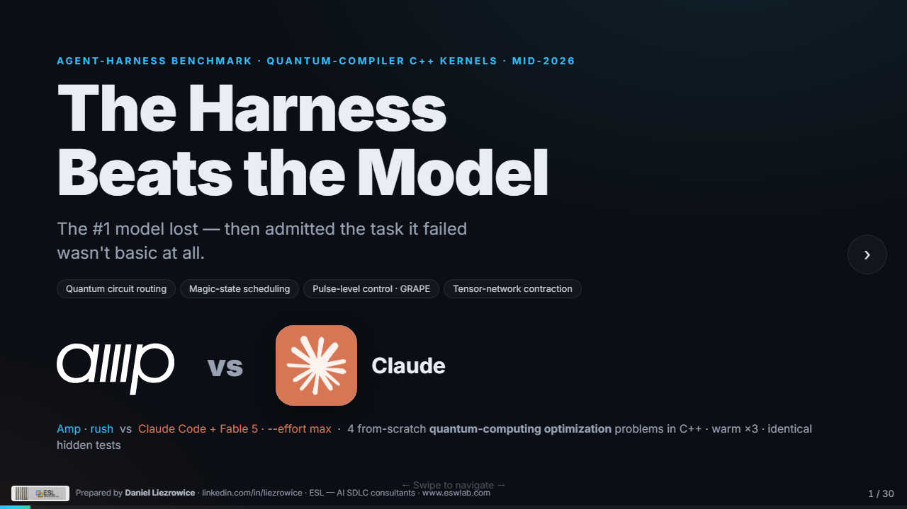
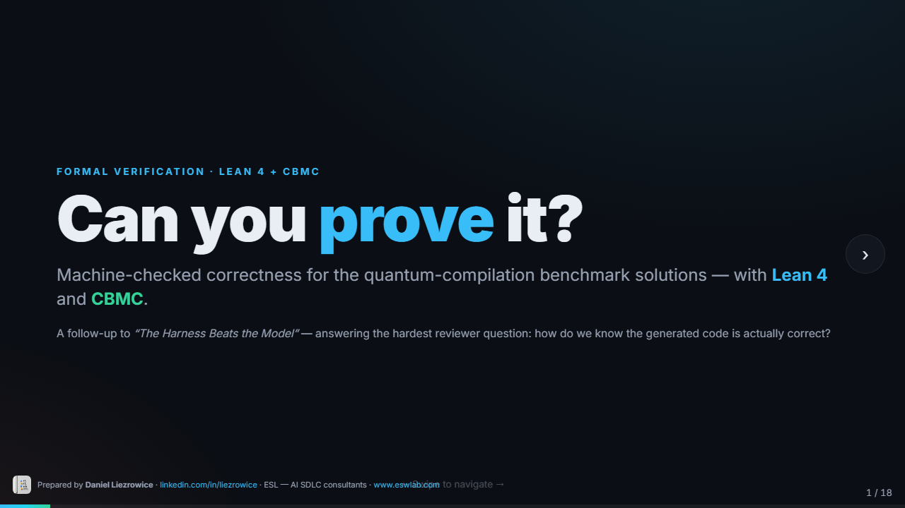

Same model. Different agent. Very different results.
A frontier model is the engine; the agent harness is the rest of the car — the transmission, steering, and driver. Give two agents the identical model and the identical task, and the better harness wins on wall-clock time and dollars while matching quality. Industry write-ups such as the Kaggle “The New SDLC with Vibe Coding” whitepaper argue the harness/workflow carries the overwhelming share of real-world outcome — a claim these experiments turn out to be consistent with.
The three experiments below stress the same thesis from three angles: a hard/technical domain, a formal-correctness challenge, and an accessible/fun domain anyone can judge.

The quantum benchmark
NP-hard quantum-compilation tasks solved by Amp basic mode vs Claude + Fable 5 max effort.

Lean 4 + CBMC proofs
12 machine-checked theorems (0 sorry) and a CBMC bounded proof of the C++ checker.

Baboons Over London
Both agents build the same silly FPS with the same model. You decide which game is better.